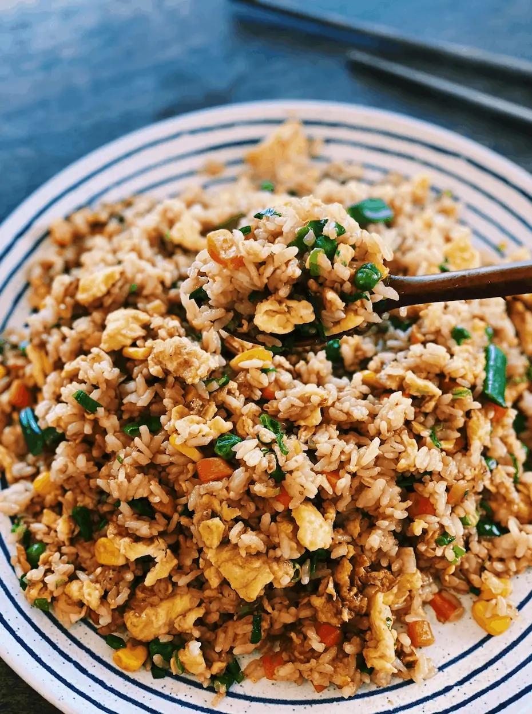

Description
If you have eggs and leftover rice, this easy 10-minute fried rice recipe is the best go-to meal! Made with only 6 ingredients, this is a great main dish, side dish or meal that is budget friendly!
Ingredients
- Leftover white rice
- Green onions
- Regular soy sauce
- Beaten eggs
- Vegetable oil
Steps
-
Heat vegetable oil in a large pan or wok. Pour in beaten eggs. Quickly stir-fry eggs so they take shape.
-
Once the eggs take shape but are still moist, quickly toss in rice. If rice is clumped together, break apart in pan.
-
Sweep everything to the side of the pan, add remaining oil into empty space with green onions. Mix green onions into rice and eggs.
-
Add soy sauce and sesame oil along the edges of the pan. Then toss until grains are colored brown. Remove off heat. Serve hot and enjoy!
Return to Top
Return to Main Page